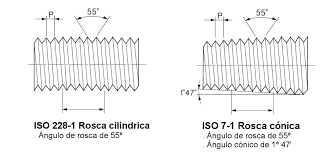
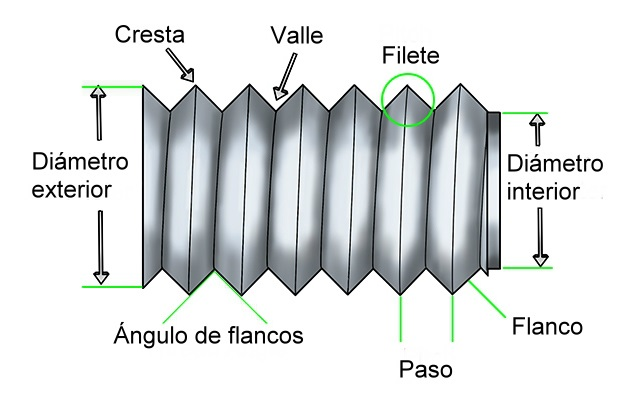

Características de la rosca métrica
| Diámetro Nominal (mm)
|
Paso Normal
|
Paso Fino
|
| 3 |
0.5 |
0.35 |
| 4 |
0.7 |
0.5 |
| 5 |
0.8 |
0.6 |
| 6 |
1 |
0.75 |
| 8 |
1.25 |
1 |
| 10 |
1.50 |
1.25 |
| 12 |
1.75 |
1.35 |
| 16 |
2 |
1.5 |
Características de la rosca Whitworth
La principal diferencia respecto a la rosca métrica se encuentra en el ángulo
de los flancos, que en este caso es de 55°. En este caso, los fondos y las crestas
están ligeramente redondeadas. Se denomina en primer lugar por una cifra que puede ser una fracción y que indica
el diámetro exterior expresado en pulgadas; la cifra siguiente define el número de hilo que hay en una pulgada
de longitud de la rosca.
| Diámetro Nominal (mm)
|
Paso Normal
|
Paso Fino
|
| 3/16 |
24 |
12 |
| 1/4 |
20 |
24 |
| 5/16 |
18 |
22 |
| 3/8 |
16 |
20 |
| 7/16 |
14 |
18 |
| 1/2 |
12 |
16 |
| 5/8 |
11 |
14 |
| 3/4 |
10 |
12 |

Abreviatura de las roscas
|
Clases de roscas
|
Abreviatura |
| Withworth normal |
BSW |
| Whitworth fina |
BSF |
| Métrica normal |
M |
| Métrica fina |
MF |
| Unificada normal |
UNC |
| Unificada Fina |
UNF |
Cálculo de roscado
Teniendo en cuenta las características de las roscas que se muestran en la figura. A continuación se describen
los cálculos más habituales.

El cálculo de profundidad de la rosca se realiza multiplicando el valor del paso de la rosca, por 0.7 en el caso
de rosca métrica. Y por 0.64 en el caso de rosca Whitworth.